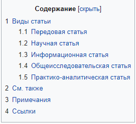

![Ups]()
Статья — это жанр журналистики, в котором автор ставит задачу проанализировать общественные ситуации, процессы, явления, прежде всего с точки зрения закономерностей, лежащих в их основе. Такому жанру как статья присуща ширина практических обобщений, глубокий анализ фактов и явлений, четкая социальная направленность[источник не указан 4856 дней]. В статье автор рассматривает отдельные ситуации как часть более широкого явления. Автор аргументированно пишет о своей точке зрения. В статье выражается развернутая обстоятельная аргументированная концепция автора или редакции по поводу актуальной социологической проблемы. Также в статье журналист обязательно должен интерпретировать факты (это могут быть цифры, дополнительная информация, которая будет правильно расставлять акценты и ярко раскрывать суть вопроса). Отличительным аспектом статьи является её готовность. Если подготавливаемый материал так и не был опубликован (не вышел в тираж, не получил распространения), то такой труд относить к статье некорректно. Скорее всего данную работу можно назвать черновиком или заготовкой. Поэтому целью любой статьи является распространение содержащейся в ней информации.
В современной журналистике выделяют пять видов статей:
Передовая статья выражает точку зрения редакции по самому актуальному
вопросу в данный момент. Передовая статья помогает правильно
ориентироваться в проблемах общественной жизни, реагирует на самые
актуальные вопросы. Основные требования: актуальность темы, глубокое
раскрытие и обоснование выдвигаемых задач, конкретность и лаконичность
обобщений, выводов, аргументов.
Передовые статьи могут быть:
На примерах конкретных ситуаций дается научно-теоретическое объяснение текущих событий. В таких статьях анализируются теоретические аспекты экономики, политики, литературы и искусства.
К этой группе относятся публикации, в которых анализируются общезначимые, широкие вопросы. Например, автор такой статьи может вести речь о направлениях политического или экономического развития страны или рассуждать об уровне нравственности, существующем на сегодняшний день в обществе в целом, или о возможности союза церкви и государства, или о взаимоотношениях страны с зарубежными государствами, и т. п. Подобного рода публикации отличаются высоким уровнем обобщения, глобальностью мышления авторов. Цель общеисследовательской статьи заключается в изучении различных закономерностей, тенденций, перспектив развития современного общества. Общеисследовательская статья — жанр трудный в том смысле, что он требует не просто знания какой-то конкретной проблемы, но предполагает теоретическое объяснение её существования.
Она обращена прежде всего к актуальным практическим проблемам промышленности и жизни, сельского хозяйства, предпринимательства, культуры, науки, образования, бизнеса, финансов, и т. д. В этих статьях анализируются конкретные проблемы, события, действия, ситуации, связанные с практическими задачами, решаемыми в той или иной сфере деятельности, отрасли производства, и пр. Автор ставит перед собой цель, выявить причины ситуации, сложившейся в той или иной сфере производства, на ряде предприятий, в социальной сфере и т. д., оценить эти ситуации, определить тенденции их развития.